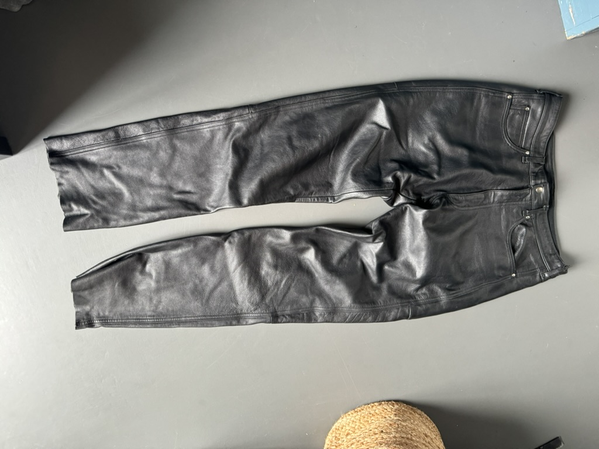
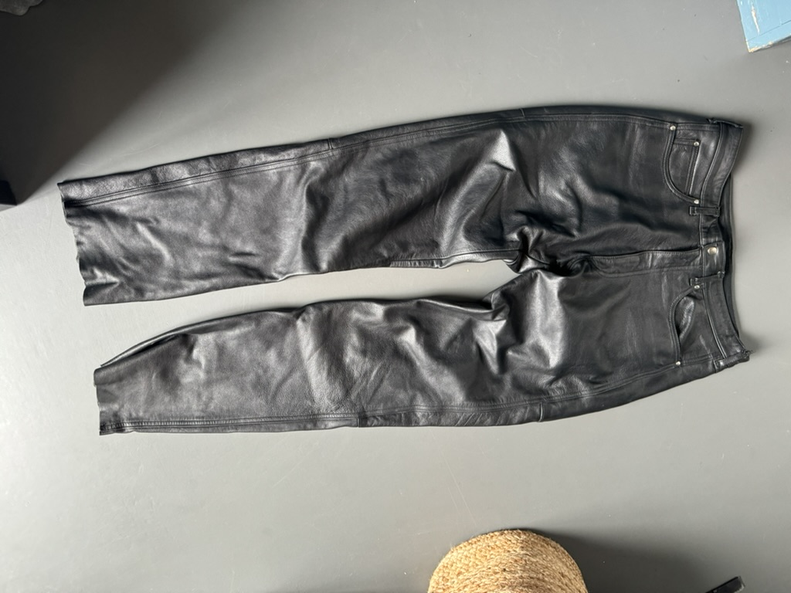

Er komen erg veel stijlen kijken bij Vintage kleding, hier ga ik een paar van de bekendste stijlen laten zien. en als je geintresseert bent in vintage, kan je hiermee misschien inspiratie opdoen voor jou stijl.


 
